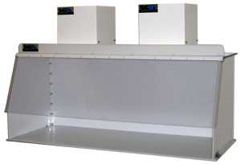

| SS-370-DCH-D Ductless Fume Hood | |
|  |
When the application requires a filtered, 70” wide hooded type enclosure on the work surface, the SS-370-DCH-D Ductless Fume Hood may be an excellent choice. This unit features unique hinged folding side panels, a high-density polyethylene base, a clear polycarbonate top and a hinged sloping front lid. For additional visibility, a transparent version is available at no extra cost. The powerful fans on top of the hood combine with a variety of Hepa and/or carbon filters to provide strong suction across the inlet area. Typical uses may involve the filtration of Toluene, MEK, Acetone, Alcohols, Solvents, and a variety of processes involving chemical fumes and dusts, where both a high velocity and high filtration area are a necessity. Sentry Air's Ductless Fume Hood can provide an effective and economical solution for many commercial, medical, laboratory and industrial applications. |
| Hood Dimensions: | O.D: 24" D x 72” W x 25" H |
| I.D.: 23.5" D x 70" W x 24" H | |
| Hood Material: | Sides: .250" White Acrylic |
| Base: .500" White High Density Polyethylene | |
| Top: .500" Clear Polycarbonate | |
| Front: .250" Clear Polycarbonate | |
| Blower Dimensions: | 13" L x 13" W x 13.75" H |
| Blower Material: | 16 ga. carbon steel w/ polyester epoxy coating on all surfaces |
| Total Weight: | 115/1/60, Approx. 4 amps |
| Motor | Fractional Horsepower, TEFC |
| Electrical: | 115/1/60, Approx. 2 amps |
| Sound Level | Approx. 61 to 66 dba (Blower Speed: Low to High) |
| Approximate Inlet Velocities: | Pre-filter & 99.97% HEPA Filter - 170 FPM High; 25 FPM Low |
| Pre-filter & Heavy-duty Carbon Filter - 115 FPM High; 20 FPM Low | |
| Warranty: | Limited one-year warranty from date of shipment on defects due to materials or workmanship. |
| Patented Design: | U.S. PATENT #5,843,197 |